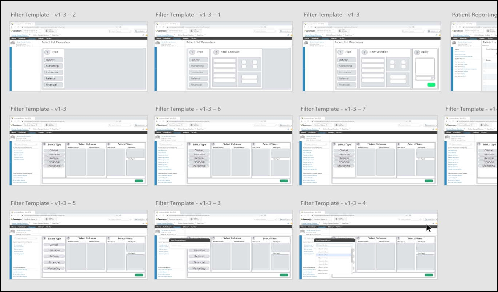

PracticeWorks Dental Practice Management Software
From 2015 through 2018 I was the UX Designer & Product Owner for PracticeWorks, a dental practice management software used in thousands of offices. My first project was incorporating a new accounting system. The challenges
were many: how to move from one accounting method to another, incorporating new payment mechanisms, and new reports, just to name a few.
Through user feedback and an iterative design process, I successfully guided the team to release a user friendly addition to PracticeWorks.

Schedule Prior to Update
❮
❯
Due to the complexity and scope of the Line Item Accounting project, I created documentation covering the feature.
This documentation covered every aspect of the feature in an accessible format.
The work completed on this project was used as the foundation for implementing line item accounting into Carestream's cutting-edge SaaS practice management software, Care Management Platform (CMP).
Using data from the support team, I focused on solving problems to drive down call volume. These included updating the schedule to support widescreen monitors, allowing multiple users into patient accounts simultaneously,
and automated CDT Code updates.
Tools Used
Patient Report and Correspondence in CMP (SaaS)
Fulfilling a longstanding request from Care Management Platform (CMP) customer base, I was assigned the task of creating a patient reporting system. I immediately realized the potential for addressing the report request
with another: mass correspondence to patients.

Design Iterations for Criteria Screen
Report Results in Prodution
Design Iterations for Report Results
Criteria Screen Selection in Production
❮
❯
After gathering requirements, I designed a rough layout for the patient criteria and report results. Through iteration and validation, the final design and user stories were complete. The feature was released to unanimous
praise for its flexibility and functionality.
Tools Used
Production Report in CMP (SaaS)
Building on existing patterns within CMP, I designed and wrote the user stories for the provider production report. A critical report for practice management, the report gives providers a view of procedures and the
fees charged.
Provider Report in Production
Design Iterations for Provider Production Report
Design Pattern for Provider Production Results
❮
❯
Due to the complexity and scope of the project, I created documentation covering the feature.
This documentation covered every aspect of the feature in an accessible format.
Tools Used